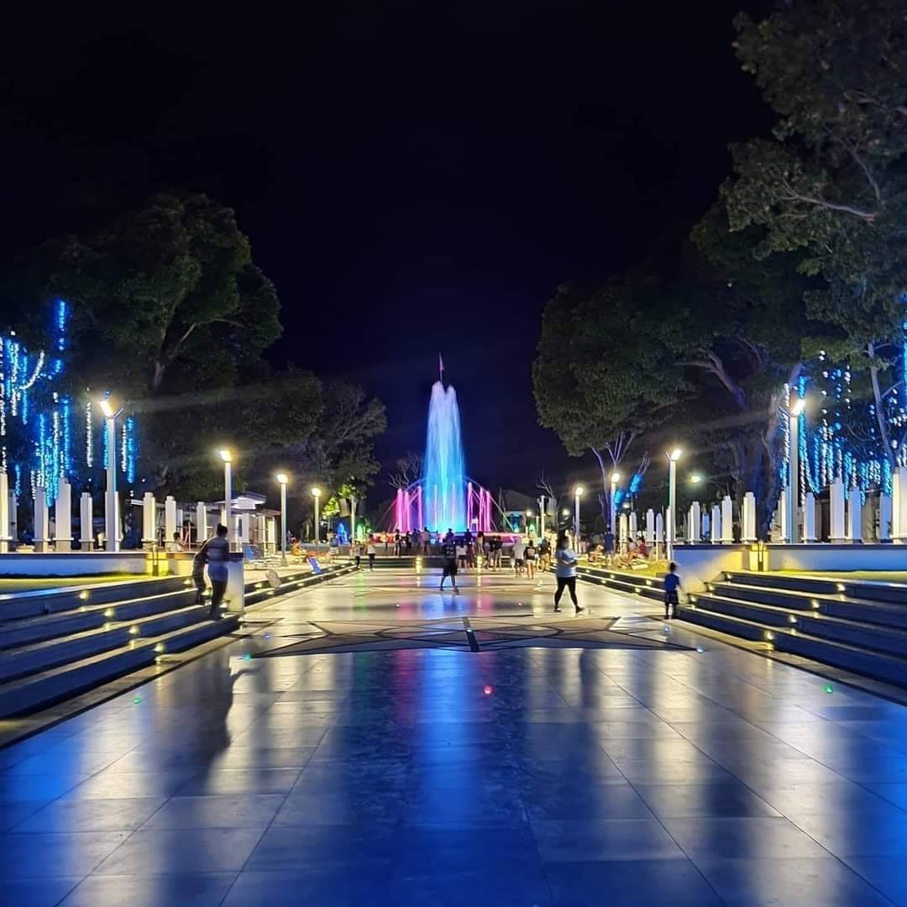

Rizal Park
Tanjay Rizal Park is an urban park located in the Heart of the city. It is almost a hectare in size bounded in the east by Osmeña Street and the City Hall; on the West by Pacifico Street; on the south by Gomez St. and on the North by Rizal St. ; Immaculate Heart Academy and St.
